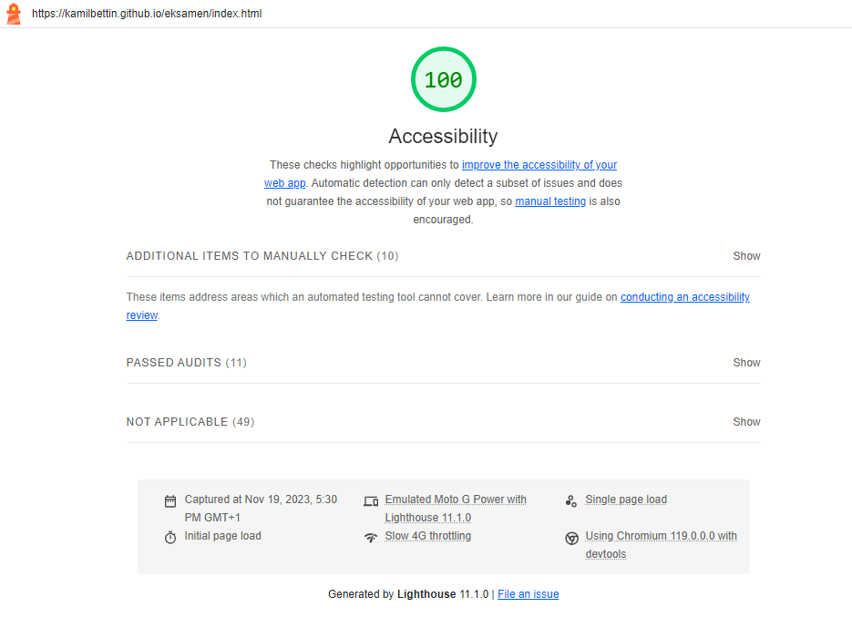
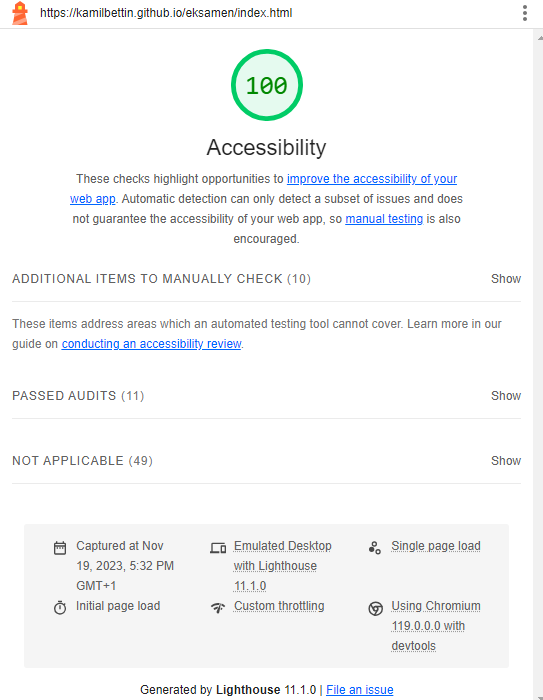

Accessibility
A little bit of information about accesibility of this page.
When writing this page, I had in mind from the beginning the accessibility of the site for anyone and any platform on which it will be opened.
I started with the navigation, which automatically adapts to the size of the page and if the size of the page is smaller than acceptable then automatically the usual list of links will be hidden and a hamburger button (checkbox) will be added, which can be expanded.
I used grid (non-automatic) to make the page look nice in the browser on the computer. Unfortunately, on smaller devices the layout of the page was not very practical, due to the fact that there was too little space in various places for text. Therefore, I also set the grid to work in different resolutions. And in smaller ones the text was simply arranged one by one. Of course, I also added so that in these smaller resolutions the text would not blend together too much (of course, in the larger ones it was not necessary because of the grid).
I also tried to make the text readable at all available resolutions on the site and to automatically adjust for browser size. For this, among other things, I used a special algorithm that I found on the Internet (quoted in the code btw).
After finishing writing and being satisfied with what I did (I prefer backend btw so be a bit forgiving) I ran for the first time the accessibility test on google chrome using Lighthouse. I got a score of 91 in availability and the only error I got is the lack of tittel (Its just one thing so I think Im not going to include picture of this one). And after adding the title, I ran the test again receiving a score of 100, on both phone and computer resolution. Here are the tests I ran.
Pictures of the accessibility tests:
 Thank you for your time grading this site, bye.